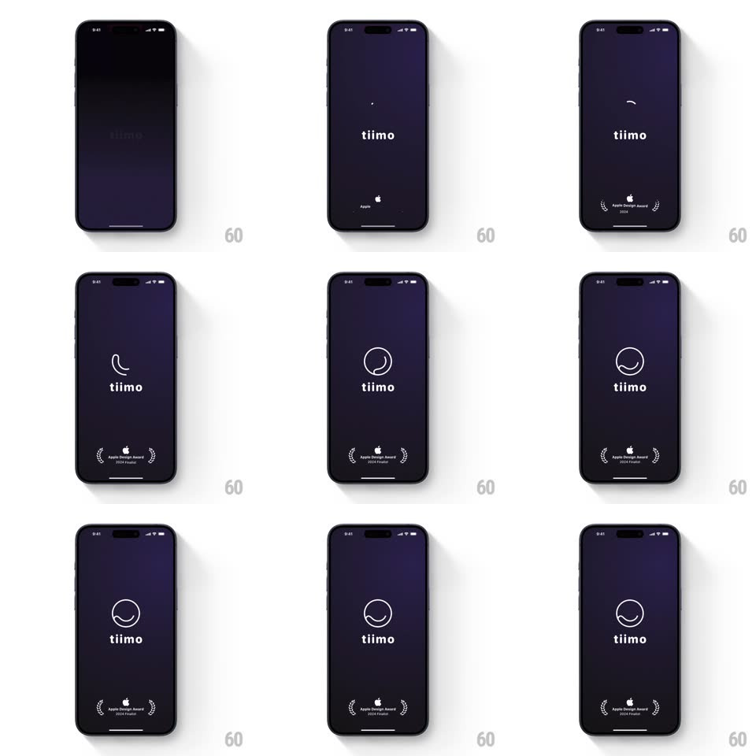

Media
Frame-by-frame

Rebuild this interaction 1:1: Tiimo's splash - on a deep purple screen the tiimo wordmark settles while the circular logo arc draws and morphs above it, and the Apple Design Award badge fades in at the bottom.

Rebuild this interaction 1:1: Tiimo's splash - on a deep purple screen the tiimo wordmark settles while the circular logo arc draws and morphs above it, and the Apple Design Award badge fades in at the bottom. ## Integration Integration: stack-agnostic spec - springs given as stiffness/damping, timed motions as duration + curve; map every value to your framework and animation library of choice. ## Scene A dark indigo/purple full screen. Center: a white circular arc logo (a near-closed ring with a gap and rounded ends) above the lowercase "tiimo" wordmark. Bottom center: the Apple Design Award 2024 Finalist laurel badge in small white. ## Motion spec Pattern: drawing morph + staged fades. - The screen fades up from black (300ms). - The arc draws itself: a stroke sweeps from a small seed arc around the circle (trim path 0 -> 100%, 900ms, ease-in-out), the rounded caps leading; the arc then does a subtle morph - the gap breathes (arc rotates a few degrees and the opening widens/narrows, 600ms) before settling. - "tiimo" fades in letter-by-letter from the center out (60ms per letter, 300ms total) as the arc finishes. - The award badge (laurels + Apple logo + text) fades in last (400ms, starting ~200ms after the wordmark) and holds. - The arc then idles with a very slow rotation (one revolution per 20s). ## Calibration - The stroke draw is the only loud motion - everything else is a fade. - Hold the full composition at least 1.2s before transitioning on. ## Reduced motion Logo, wordmark, and badge fade in together; no stroke draw or rotation. ## Don't miss - The arc's gap sits at roughly 4 o'clock with rounded stroke caps. - The laurel badge is small and quiet - a footnote, not a second focal point.